![شعار المدرسة المركزية]()
مرجع مادة المهارات الرقمية
موقع مرجعي لطلاب المرحلة الابتدائية يجمع دروس مادة المهارات الرقمية وواجباتها وإثراءاتها في مكان واحد، للأستاذ محمد هليل الشمري بالمدرسة المركزية في حائل.
اليوم الوطني السعودي 96
عزّنا بطبعنا 🇸🇦 — احتفالًا باليوم الوطني السعودي الـ96، شاهدوا هذا المقطع مع عائلاتكم.
المدرسة المركزية
مدرستنا مدرسة مركزية برقم وزاري وكادر تعليمي وإداري متكامل، تقدّم التعليم المتزامن وغير المتزامن عن بُعد عبر منصة مدرستي لعدد من المدارس قليلة العدد في المناطق النائية ("المدارس الملحقة"). صُمم هذا النموذج بإشراف وزارة التعليم لضمان استمرارية تعليم عالي الجودة لطلاب هذه المدارس، وإثرائهم بخبرات ومصادر تعليمية مميزة، وربطهم بأقرانهم ومعلمين خبراء عن بُعد.
أهداف النموذج
- ضمان استمرارية تعليم الطلبة في المناطق النائية للمدارس قليلة العدد.
- تمكين الطلبة في البيئة التعليمية ورفع مهاراتهم من خلال تعليم مُدمج (حضوري وعن بُعد).
- تحسين تجربة تعلم الطلبة في المناطق النائية من خلال تفاعلهم مع أقرانهم في مناطق أخرى، وتلقي التعليم من معلمين متخصصين عن بُعد.
المواد الدراسية حسب طريقة التدريس
وفق نموذج المدرسة المركزية، تُدرَّس بعض المواد حضوريًا في مدرسة الطالب نفسها، وتُدرَّس البقية عن بُعد بواسطة معلمي المدرسة المركزية عبر منصة مدرستي.
| المرحلة | تُدرَّس حضوريًا (بمدرسة الطالب) | تُدرَّس عن بُعد (من المدرسة المركزية) |
|---|---|---|
| الابتدائية | لغتي، الرياضيات، العلوم | التربية الإسلامية، الدراسات الاجتماعية، المهارات الرقمية، التربية الفنية، التربية البدنية، وبقية المواد |
| المتوسطة | لغتي، الرياضيات، العلوم | التربية الإسلامية، الدراسات الاجتماعية، المهارات الرقمية، التربية الفنية، التربية البدنية، وبقية المواد |
| الثانوية | — | جميع المقررات تُدرَّس عن بُعد من المدرسة المركزية |
ماذا يعني هذا لطلاب المدارس الملحقة؟
- يدرس الطالب مواد (لغتي، الرياضيات، العلوم) حضوريًا مع معلم مدرسته، وبقية المواد — مثل التربية الإسلامية، الدراسات الاجتماعية، المهارات الرقمية، التربية الفنية، والتربية البدنية — إلكترونيًا عن بُعد بواسطة معلمي المدرسة المركزية، وتختلف قائمة المواد قليلًا حسب المرحلة الدراسية.
- الالتزام بحضور الدروس، والتفاعل مع المعلم الحضوري ومعلم المدرسة المركزية، وتنفيذ ما يُوكل إليه من واجبات وأنشطة عبر منصة مدرستي.
- تُؤدى الاختبارات الفترية والنهائية حضوريًا داخل مدرسة الطالب نفسها.
- عند الحاجة، يحصل الطالب على خطة علاجية ودروس تقوية بمتابعة من المعلمين.
ما يهم أولياء الأمور
- يبقى ابنك مسجلًا في نظام "نور" تابعًا لمدرسته (الملحقة)، بينما يظهر في منصة "مدرستي" تحت المدرسة المركزية — وهذا وضع رسمي معتمد من الوزارة وليس خطأً في التسجيل.
- مدرسة الابن الملحقة هي أول جهة تواصل بخصوص الحضور والغياب والشؤون اليومية، وتتابع المدرسة المركزية الجانب التعليمي عن بُعد بالتنسيق معها.
- الاختبارات كلها تؤدى حضوريًا في مدرسة الابن، مهما كانت المادة تدرَّس حضوريًا أو عن بُعد.
- يمكن متابعة أداء الابن وتحصيله من خلال التواصل مع معلم مدرسته أو المعلم المختص بالمدرسة المركزية عبر القنوات الرسمية.
للمعلمين والزملاء
يتولى معلم المدرسة المركزية تدريس مواد (لغتي، الرياضيات، العلوم) عن بُعد لطلاب المدارس الملحقة عبر منصة مدرستي، ويشمل ذلك إعداد الاختبارات والأنشطة، ومتابعة تحصيل الطلاب وتقويمهم، وإعداد الخطط العلاجية بالتنسيق مع معلمي المدارس الملحقة، وتسجيل الحضور والغياب على المنصة.
السيرة الذاتية
محمد بن هليل الشمري
معلم مادة المهارات الرقمية (الحاسب الآلي) — المدرسة المركزية، حائل
الهدف الوظيفي
أطمح في العمل على رفع كفاءة المدرسة، والرغبة في التطوير المستمر للذات والرقي بالعمل لتحقيق الأهداف المطلوبة وتنمية خبراتي، واجتهد في الحصول على الدورات المطلوبة والسعي للأفضل.
المؤهلات التعليمية
بكالوريوس حاسب آلي — تخصص علوم حاسب آلي
جامعة الملك سعود — كلية التربية · 1995 – 1996
الخبرات المهنية
المشاركات والإنجازات
- مشارك في تأليف مقرر التدريب للصفوف العليا للمرحلة الابتدائية — حاسب آلي
- المشاركة الابداعية في معرض ابداع معلم للعام الدراسي 1432/1433هـ
- رئيس فريق معيار الإدارة الالكترونية بتعليم حائل
- المساهمة في حصول إدارة التعليم بمنطقة حائل على جائزة التميز الإداري للعام 1437/1438هـ
- رئيس لجنة التوظيف بالإدارة العامة للتعليم بمنطقة حائل
- رئيس المشاريع التقنية بالإدارة العامة للتعليم بمنطقة حائل
الدورات التدريبية
- دورة المشرفين التربويين — فصل دراسي، جامعة الملك سعود
- الأساليب الحديثة في الإعلام المعاصر (15 ساعة) — أكاديمية خبراء الإدارة
- تصميم المواقع التفاعلية (20 ساعة تدريبية) — الإدارة العامة للتدريب والابتعاث بوزارة التربية
- استراتيجيات التدريس (التعلم التعاوني، الاستقصاء، الاتصال، مصادر التعلم، التقويم البنائي، لعب الأدوار وغيرها) — وزارة التربية والتعليم
- دورة أساسيات البنية التحتية لتقنية المعلومات ITIL — معهد الإدارة العامة، 2016م
- دورة النشر الالكتروني — الجمعية العلمية السعودية للعلاقات العامة والاعلان، 2016م
- دورة التوعية بنظام ISO 9001:2008 لمهمات الاستشارات الإدارية، 2017م
المهارات
اللغات
الصف الرابع الابتدائي
كتاب الطالب (المقرر الدراسي)
توزيع المقرر
الوحدة الأولى: تعلم الأساسيات
| الأسبوع | التاريخ | الحصة الأولى | الحصة الثانية |
|---|---|---|---|
| الأول | 1448/03/10 هـ 2026/08/23 م | الدرس الأول: الحاسب | الدرس الأول: الحاسب + طرح فكرة المشروع |
| الثاني | 1448/03/17 هـ 2026/08/30 م | الدرس الثاني: سطح المكتب | الدرس الثاني: سطح المكتب |
| الثالث | 1448/03/24 هـ 2026/09/06 م | الدرس الثالث: إعدادات جهاز الحاسب | + مناقشة مشروع الوحدة الأولى / تقويم الوحدة الأولى |
الوحدة الثانية: العمل على النص
| الأسبوع | التاريخ | الحصة الأولى | الحصة الثانية |
|---|---|---|---|
| الرابع | 1448/04/02 هـ 2026/09/13 م | الدرس الأول: لوحة المفاتيح | الدرس الأول: لوحة المفاتيح + طرح فكرة المشروع |
| إجازة الأربعاء والخميس | |||
| الخامس | 1448/04/09 هـ 2026/09/20 م | الدرس الثاني: تحرير النص | الدرس الثاني: تحرير النص |
| السادس | 1448/04/16 هـ 2026/09/27 م | الدرس الثالث: تنسيق النص | الدرس الثالث: تنسيق النص |
| السابع | 1448/04/23 هـ 2026/10/04 م | الدرس الثالث: تنسيق النص | الدرس الرابع: تنسيق الفقرة |
| الثامن | 1448/04/30 هـ 2026/10/11 م | مناقشة مشروع الوحدة الثانية | تقويم الوحدة الثانية + جدول المهارات |
الوحدة الثالثة: عالمي المتصل
| الأسبوع | التاريخ | الحصة الأولى | الحصة الثانية |
|---|---|---|---|
| التاسع | 1448/05/07 هـ 2026/10/18 م | الدرس الأول: الموقع الإلكتروني | الدرس الأول: الموقع الإلكتروني + طرح فكرة المشروع |
| العاشر | 1448/05/14 هـ 2026/10/25 م | الدرس الثاني: البحث في الإنترنت | الدرس الثالث: مصادر المعلومات |
| الحادي عشر | 1448/05/21 هـ 2026/11/01 م | الدرس الثالث: مصادر المعلومات | الدرس الرابع: السلامة على الإنترنت |
| الثاني عشر | 1448/05/28 هـ 2026/11/08 م | الدرس الرابع: السلامة على الإنترنت + مناقشة مشروع الوحدة الثالثة | تقويم الوحدة الثالثة |
الوحدة الرابعة: العمل مع البرمجة باستخدام سكراتش
| الأسبوع | التاريخ | الحصة الأولى | الحصة الثانية |
|---|---|---|---|
| الثالث عشر | 1448/06/05 هـ 2026/11/15 م | الدرس الأول: أساسيات سكراتش | الدرس الأول: أساسيات سكراتش |
| إجازة الخريف: من 1448/06/09 هـ حتى 1448/06/18 هـ (من 2026/11/20 م حتى 2026/11/28 م) | |||
| الرابع عشر | 1448/06/19 هـ 2026/11/29 م | الدرس الأول: أساسيات سكراتش + طرح فكرة المشروع | الدرس الثاني: استخدام اللبنات البرمجية |
| الخامس عشر | 1448/06/26 هـ 2026/12/06 م | الدرس الثاني: استخدام اللبنات البرمجية | الدرس الثالث: التكرارات في سكراتش |
| السادس عشر | 1448/07/04 هـ 2026/12/13 م | الدرس الثالث: التكرارات في سكراتش | الدرس الرابع: الرسم بواسطة سكراتش |
| السابع عشر | 1448/07/11 هـ 2026/12/20 م | الدرس الرابع: الرسم بواسطة سكراتش | الدرس الرابع: الرسم بواسطة سكراتش |
| الثامن عشر | 1448/07/18 هـ 2026/12/27 م | مناقشة مشروع الوحدة الرابعة + جدول المهارات + اختبر نفسك | تقويم الوحدة الرابعة |
| التاسع عشر | 1448/07/25 هـ 2027/01/03 م | الاختبارات النهائية النظرية | الاختبارات النهائية النظرية |
اتفاقية التعليم عن بعد
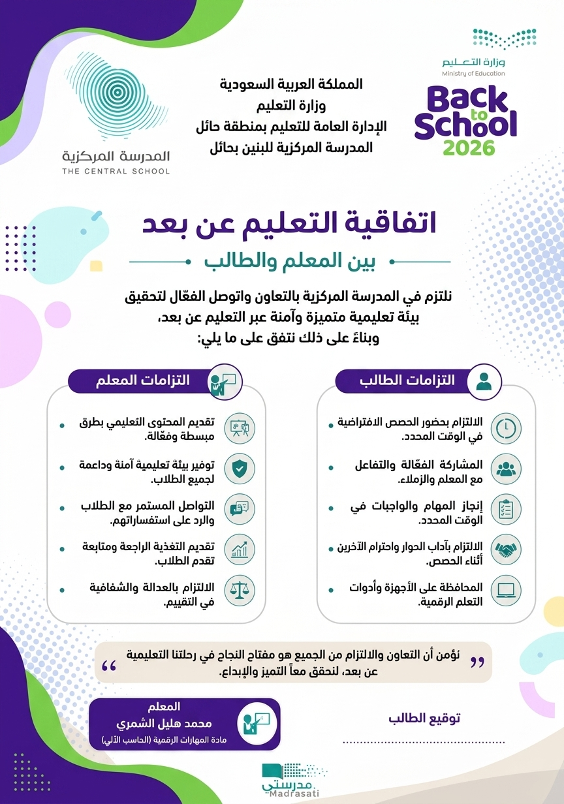
القواعد الصفية
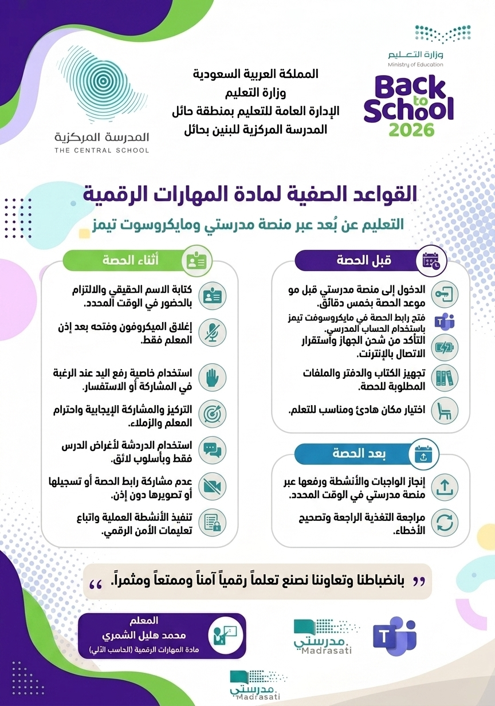
الاختبار التشخيصي
الاختبار التشخيصي اختبار قصير يُجرى في بداية الفصل الدراسي لمعرفة مستوى الطالب المبدئي في مهارات المادة قبل بدء الدروس. لا يترتب عليه نجاح أو رسوب ولا يؤثر على درجات الطالب — هدفه الوحيد مساعدة المعلم على فهم نقاط القوة والضعف لدى الطلاب والتخطيط للدروس بما يناسبهم.
الوحدة الأولى: تعلم الأساسيات
الدرس الأول: الحاسب
شرح الدرس
الدرس في صورة
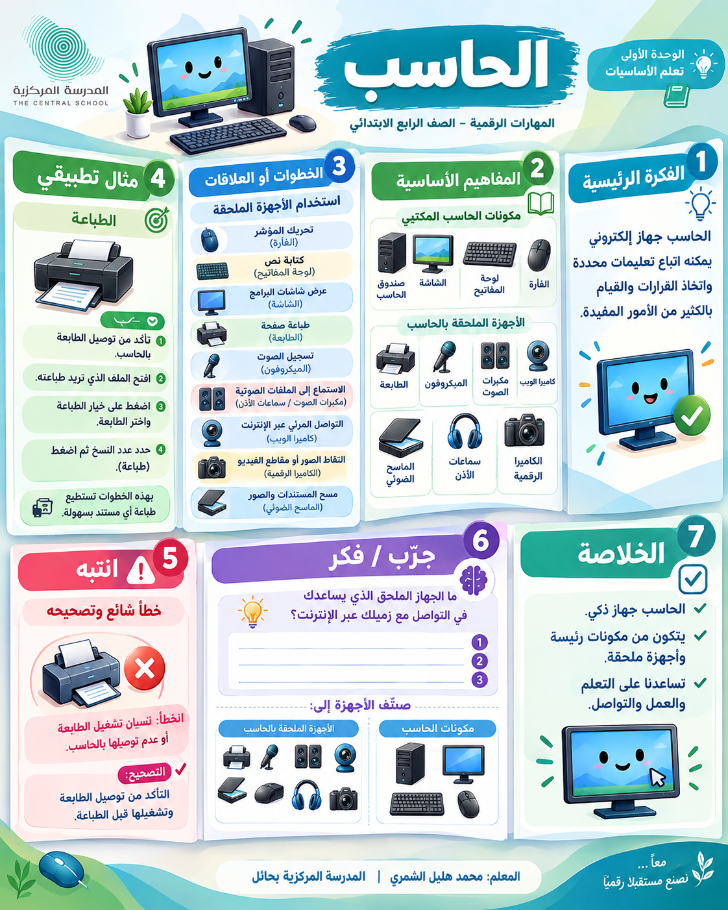
الحصة الأولى (ص 14-15): ما الحاسب؟
الحاسب جهاز إلكتروني يتّبع تعليمات محددة، ويساعدنا على كتابة النصوص، ورسم وتنسيق الصور، وإرسال البريد الإلكتروني، وغيرها من المهام. أكثر أنواعه شيوعًا هو الحاسب المكتبي.
يتكوّن الحاسب المكتبي من 4 أجزاء رئيسة:
- صندوق الحاسب
- الشاشة
- لوحة المفاتيح
- الفأرة
الحصة الثانية (ص 16-18): الأجهزة الملحقة بالحاسب
بالإضافة إلى المكونات الرئيسة، توجد أجهزة ملحقة تساعدنا على مهام إضافية، مثل: كاميرا الويب، مكبر الصوت، الميكروفون، الطابعة، الكاميرا الرقمية، سماعات الأذن، والماسح الضوئي.
مثال: الطابعة تتيح لنا طباعة كل ما نراه على الشاشة (نصوص، أرقام، صور) على الورق، وتتصل بالحاسب عبر سلك USB أو الشبكة اللاسلكية.
الواجب
اختر الإجابة الصحيحة لكل سؤال:
- أحد أنواع الحاسبات التي تتفاوت في حجمها وقدراتها، ويُعد أكثرها شيوعًا: (صندوق الحاسب / الماسح الضوئي / الحاسب المكتبي)
- من المكونات الرئيسة للحاسب: (الكاميرا الرقمية / سماعات الأذن / لوحة المفاتيح)
- من الأجهزة الملحقة بالحاسب: (كاميرا الويب / لوحة المفاتيح / الفأرة)
- يُعد الماسح الضوئي من: (أنواع الشاشات / الأجهزة الملحقة بالحاسب / المكونات الرئيسة للحاسب المكتبي)
الإثراءات
تجوّل مع أحد والديك حول المنزل، وابحث عن الأجهزة الملحقة بالحاسب الموجودة لديكم (طابعة، سماعات، كاميرا...)، ثم اكتب قائمة بأسمائها ووظيفة كل جهاز منها.
الدرس الثاني: سطح المكتب
شرح الدرس
الدرس في صورة
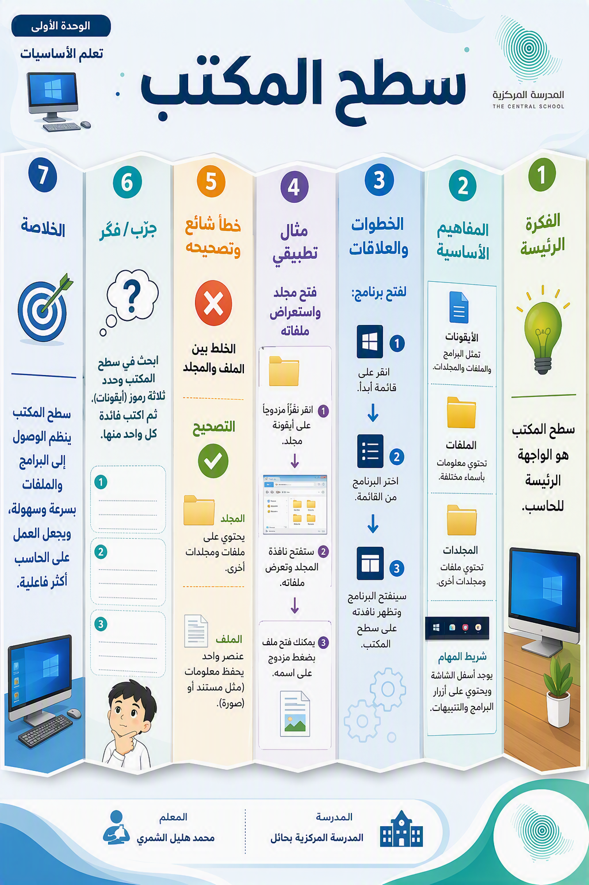
الحصة الأولى (ص 20-25): سطح المكتب والملفات
سطح المكتب هو الشاشة الرئيسة لنظام التشغيل، ويتكوّن من: زر ابدأ، شريط المهام، مستكشف الملفات، سلة المحذوفات، متصفح الإنترنت، إعدادات الاتصال بالإنترنت والصوت، والتاريخ/الوقت.
الملفات هي البيانات والمعلومات المخزّنة في الحاسب (نص، صورة، ملف صوتي، عرض تقديمي، فيديو...)، ولكل ملف اسم فريد وامتداد يوضح نوعه. يمكننا إنشاء ملف جديد (مثلًا رسمة ببرنامج الرسام)، فتحه، أو حذفه.
المجلدات تُستخدم لتنظيم الملفات: يمكن إنشاء مجلد جديد، وإعادة تسميته، وتقسيمه إلى مجلدات فرعية داخل المجلد الرئيس (مثلًا: مجلد "المواد الدراسية" يحتوي مجلدات فرعية لكل مادة).
الحصة الثانية (ص 26): نقل الملفات والبرامج
يمكن نقل ملف أو مجلد لمكان آخر بالضغط بزر الفأرة الأيمن، ثم اختيار "قص"، والانتقال للمكان الجديد واختيار "لصق". كما يوفر الحاسب برامج مفيدة مثل الحاسبة لإجراء العمليات الحسابية، وخاصية الحصول على التعليمات للبحث عن حل لأي مشكلة تواجهنا.
الواجب
اختر الإجابة الصحيحة لكل سؤال:
- تُسمى البيانات المخزنة والمعلومات الموجودة في الحاسب باسم: (الملفات / العروض التقديمية / البرامج)
- جزء من اسم الملف يشير إلى نوع ذلك الملف: (مكان الملف / حجم الملف / امتداد الملف)
- مساحة تخزينية نحفظ ونُنظّم فيها الملفات والبرامج: (البرنامج / المجلد / العرض التقديمي)
- يُسمى المجلد الموجود داخل مجلد آخر باسم: (المجلد الرئيسي / المستند / المجلد الفرعي)
الإثراءات
أنشئ على سطح مكتب جهازك (بمساعدة أحد والديك) مجلدًا رئيسًا باسم "المواد الدراسية"، وداخله مجلدات فرعية بأسماء موادك الدراسية، ثم انقل إليها ملفات واجباتك لتكون منظمة.
الدرس الثالث: إعدادات جهاز الحاسب
شرح الدرس
الدرس في صورة
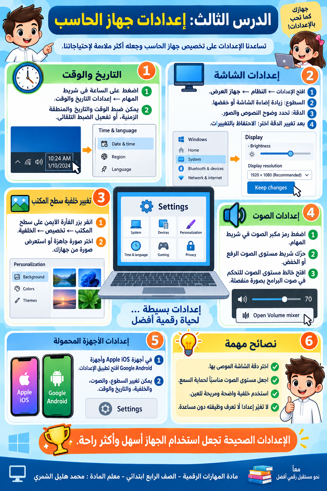
سنتعلم في هذا الدرس كيف نضبط جهاز الحاسب ليصبح أكثر جمالًا وأسهل استخدامًا، من خلال أربع مهارات رئيسة:
١) تغيير تاريخ ووقت الحاسب:
- اضغط بزر الفأرة الأيمن على التاريخ والوقت في الجانب الأيسر من شريط المهام.
- في النافذة التي تظهر اضغط على "ضبط التاريخ / الوقت".
- في نافذة الإعدادات اضغط على زر "تغيير"، ثم حدد التاريخ والوقت الصحيحين.
٢) ضبط دقة الشاشة:
- اضغط بزر الفأرة الأيمن على سطح المكتب، ثم اختر "إعدادات العرض".
- في قسم جهاز العرض، اضغط على السهم بجوار "الدقة" وحرّك شريط التمرير لاختيار الدقة المناسبة.
- اضغط "الاحتفاظ بالتغييرات" لاستخدام الدقة الجديدة، أو "إرجاع" إذا غيّرت رأيك.
٣) تغيير مظهر سطح المكتب:
- اضغط بزر الفأرة الأيمن على مساحة فارغة من سطح المكتب، ثم اختر "تخصيص".
- من نافذة الإعدادات اضغط على "الخلفية"، واختر الصورة التي تعجبك — يمكنك حتى استخدام رسمة رسمتها بنفسك في برنامج الرسام!
٤) ضبط مستوى الصوت:
- اضغط بزر الفأرة الأيمن على أيقونة السماعة في شريط المهام، ثم اختر "فتح خالط مستوى الصوت".
- اسحب شريط التمرير لأعلى أو لأسفل لتغيير مستوى الصوت كما تريد.
تذكّر: عند تجهيز حاسب المدرسة، نختار اللغة العربية لتكون القوائم واضحة، ونضبط الوقت بدقة حتى تعمل الدروس في وقتها الصحيح.
الواجب
اختر الإجابة الصحيحة لكل سؤال:
- لتغيير التاريخ والوقت في حاسبك، من نافذة الإعدادات، عليك الضغط على زر: (تغيير / تحرير / تعديل)
- وحدة ترمز إلى دقة الشاشة، وتستخدمها أجهزة الحاسب لإظهار النصوص والصور على الشاشة: (الديسيبل / البكسل / الريختر)
- من الخطأ الافتراض أن اختيار الدقة العالية يعني الحصول على رسومات أفضل على الشاشة، لأن: (الرسومات لا تتأثر بدقة الشاشة / وحدة القياس غير دقيقة / كل شاشة تعمل بدقة محددة)
- لتغيير مظهر سطح المكتب، نضغط بزر الفأرة الأيمن على مساحة فارغة على سطح المكتب، ثم نضغط: (تحديث / تخصيص / جديد)
الإثراءات
جرّب مع أحد والديك (بحذر وتحت إشرافهم) تغيير صورة خلفية سطح المكتب إلى صورة من رسمك الخاص ببرنامج الرسام، ثم اضبط مستوى الصوت المناسب — وفكّر: هل تستطيع اختيار أكثر من خلفية متغيرة لسطح المكتب؟
تقويم الوحدة
هذا التقويم يُعتبر تقويمًا رسميًا للوحدة بأكملها، وينبغي الاهتمام بالإجابة عليه بعناية والاستذكار الجيد لجميع دروس الوحدة قبل حله.
الوحدة الثانية: العمل على النص
الدرس الأول: لوحة المفاتيح
شرح الدرس
الدرس في صورة
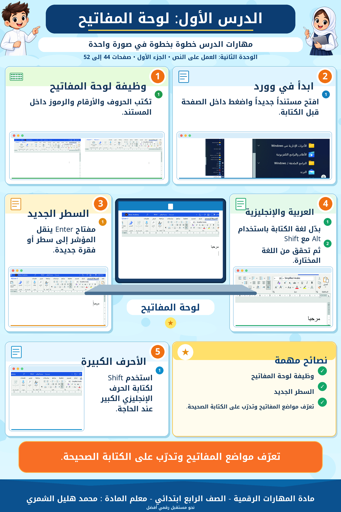
لوحة المفاتيح جهاز نستخدمه لكتابة النصوص والأرقام والرموز داخل المستند.
الحصة الأولى (ص 44-46): فتح وورد وكتابة الأرقام
- لفتح برنامج مايكروسوفت وورد: اضغط زر ابدأ ← مرّر الشريط الجانبي لأسفل ← اضغط أيقونة Word ← اضغط "مستند فارغ" لإنشاء مستند جديد.
- لكتابة الأرقام: اضغط بالفأرة على الصفحة البيضاء مرة واحدة، ثم اكتب الأرقام التي تريدها بلوحة المفاتيح.
الحصة الثانية (ص 46-50): اللغة والسطر الجديد والأحرف الكبيرة
- تبديل لغة الكتابة: اضغط Alt مع Shift معًا لتبديل اللغة بين العربية والإنجليزية، ثم تحقق من اللغة المختارة.
- السطر الجديد: مفتاح Enter ينقل المؤشر إلى سطر أو فقرة جديدة.
- الأحرف الكبيرة بالإنجليزية: استخدم Shift مع الحرف لكتابته كبيرًا عند الحاجة.
الواجب
اختر الإجابة الصحيحة لكل سؤال:
- جهاز يمكنك استخدامه لكتابة النصوص والأرقام عند استخدام جهاز الحاسب: (الماسح الضوئي / لوحة المفاتيح / الفأرة)
- زر الإدخال، ويمكن استخدامه في إنشاء سطر جديد: (Enter / مفتاح المسافة / Alt)
- زر يمكن من خلاله قَفل الحروف الكبيرة (كتابة الحروف الإنجليزية الكبيرة): (Caps Lock / Shift / Ctrl)
- لإنشاء مستند جديد على برنامج مايكروسوفت وورد، من زر بدء نضغط على أيقونة وورد، ثم نضغط على: (مستند جاهز / مستند مهم / مستند فارغ)
الإثراءات
فكّر وناقش أحد والديك: كيف نكتب أرقامًا عربية وإنجليزية في نفس الصفحة؟ وفي حال تعطلت لوحة المفاتيح، كيف يمكننا تجاوز هذه المشكلة؟
الدرس الثاني: تحرير النص
شرح الدرس
الدرس في صورة
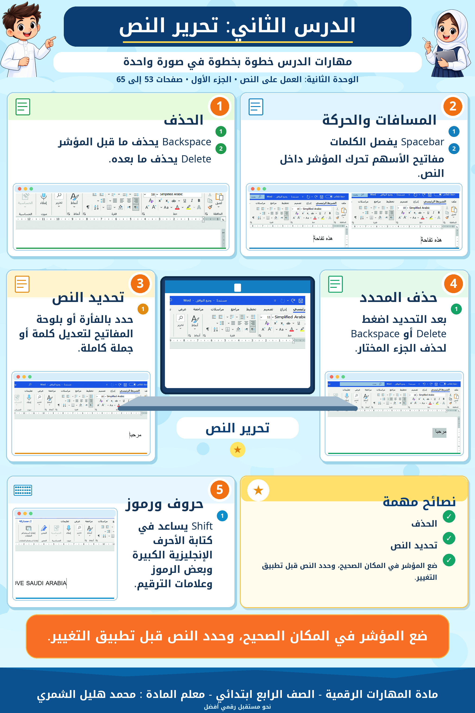
الحصة الأولى (ص 53-58): الحذف والتحرك والتحديد
- Backspace: يحذف الحرف الذي يسبق المؤشر.
- Delete: يحذف الحرف الذي يلي المؤشر.
- Spacebar: يضيف مسافة تفصل بين الكلمات.
- مفاتيح الأسهم: تحرّك المؤشر داخل النص في كل الاتجاهات.
- تحديد النص بالفأرة: اضغط بزر الفأرة الأيسر في بداية النص واسحب حتى نهايته.
- تحديد النص بلوحة المفاتيح: اضغط Shift مع أحد الأسهم لتحديد النص باتجاه السهم.
الحصة الثانية (ص 59-62): حذف المحدد والأحرف الكبيرة والهمزة والترقيم
- حذف النص المحدد: بعد تحديد كلمة أو جملة، اضغط Delete أو Backspace لحذفها كاملة.
- الأحرف الكبيرة بالإنجليزية: اضغط باستمرار على Shift ثم اضغط على الحرف المطلوب كبيرًا.
- كتابة الهمزة (أ): اضغط باستمرار على Shift ثم اضغط H.
- الفاصلة والنقطة: الفاصلة بالضغط على Shift مع K، والنقطة بالضغط على Shift مع >.
الواجب
اختر الإجابة الصحيحة لكل سؤال:
- لحذف الحرف الذي يسبق مؤشر الكتابة، نستخدم مفتاح: (Delete / Shift / Ctrl)
- مفتاح يمكن استخدامه لإضافة مسافة فارغة بين الكلمات في النص الخاص بك: (Shift / Spacebar / Backspace)
- قبل تنفيذ أي إجراء مثل الحذف أو النقل على النص، لابد أولًا من: (تلوين النص / تكبير النص / تحديد النص)
- لتحديد النص باستخدام لوحة المفاتيح، يمكنك الضغط على أحد الأسهم مع استمرار الضغط على مفتاح: (Backspace / Shift / Ctrl)
الإثراءات
فكّر: عدّد خمس طرق لمسح النص المكتوب، وكيف يُمكن كتابة الألف "إ" من خلال برنامج مايكروسوفت وورد؟
الوحدة الثالثة: عالمي المتصل
الدرس الأول: الموقع الإلكتروني
شرح الدرس
الدرس التفاعلي: شرح مطابق للكتاب، و«الدرس في صورة»، وتدريبات عملية بتصحيح فوري.
الواجب
أجب عن أسئلة الواجب بعد مشاهدة الشرح وحل التدريبات التفاعلية، وتأكد من كتابة اسمك الثلاثي بشكل صحيح.
فتح نموذج الواجبالإثراءات
عنوان الموقع يسمى URL، ونهايته تدل على نوع الموقع: .gov للمواقع الحكومية و.edu للمؤسسات التعليمية. اطلب من أحد والديك أن يفتح معك منصة عين www.ien.edu.sa، وابحث عن ارتباط تشعبي لكتاب المهارات الرقمية للصف الرابع، واكتب ماذا وجدت.
الدرس الثاني: البحث في الإنترنت
شرح الدرس
الدرس التفاعلي: «شرح الدرس في صورة»، وشرح مطابق للكتاب، ومختبر بحث يحاكي المتصفح ومحرك البحث، وتدريبات بتصحيح فوري.
الواجب
أجب عن أسئلة الواجب بعد مشاهدة الشرح وتجربة مختبر البحث، وتأكد من كتابة اسمك الثلاثي بشكل صحيح.
فتح نموذج الواجبالإثراءات
اختر مع أحد والديك معلمًا سياحيًا في منطقة حائل، وابحث عنه في محرك البحث. اكتب ثلاث معلومات وجدتها، وعنوان (URL) الموقع الذي أخذتها منه، وفضّل المواقع الرسمية.
الدرس الثالث: مصادر المعلومات
شرح الدرس
الدرس التفاعلي بتصميم سهل القراءة: خط كبير، وجمل قصيرة، وزر 🔊 لسماع كل فقرة، وألعاب وتدريبات بالضغط دون كتابة.
الإثراءات
مع أسرتك: ابحث عن معلم في منطقة حائل مثل جبل أجا، واختر موقعًا رسميًا، وانظر إلى تاريخ التحديث، ثم انسخ معلومة واحدة واكتب تحتها المصدر.
الدرس الرابع: السلامة على الإنترنت
شرح الدرس
الدرس التفاعلي بتصميم سهل القراءة: خط كبير، وجمل قصيرة، وزر 🔊 لسماع كل فقرة، وألعاب وتدريبات بالضغط دون كتابة.
الإثراءات
مشروع الوحدة «معالمي المفضلة»: ابحث في بينج عن معالمك المفضلة، وتأكد أن المصدر موثوق، وانسخ المعلومات إلى مستند نصي، ثم احفظه واعرضه على معلمك.
المسار التدريبي
هذا مسارك الشخصي في مادة المهارات الرقمية — ابدأ بالدرس الأول، وبعد ما تنهيه يفتح لك الدرس التالي تلقائيًا. اكتب اسمك أول مرة ليتذكرك الموقع، ويقدر المعلم يتابع تقدمك.
إنجاز الدرس هنا يعتمد على أمانتك — اقرأ الدرس وحل واجبه قبل ما تضغط "أنهيت الدرس". يصل تقدمك مباشرة لمعلمك.
أضف مشروعك
مشاريعك التطبيقية جزء مهم من تعلّمك — فهي التي تحوّل ما تتعلمه إلى شيء حقيقي تصنعه بنفسك. يسعدني جدًا رؤية إنجازاتكم، وسيتم عرض أفضل المشاريع على هذا الموقع ليستفيد ويستمتع بها زملاؤكم.
كل مشروع يُرفع ويُقبل يستحق مكافأة قدرها 10 ريالات 🎉
الصف الخامس الابتدائي
كتاب الطالب (المقرر الدراسي)
توزيع المقرر
الوحدة الأولى: تعلم الأساسيات
| الأسبوع | التاريخ | الحصة الأولى | الحصة الثانية |
|---|---|---|---|
| الأول | 1448/03/10 هـ 2026/08/23 م | الدرس الأول: أجهزة الحاسب | الدرس الأول: أجهزة الحاسب + طرح فكرة المشروع |
| الثاني | 1448/03/17 هـ 2026/08/30 م | الدرس الثاني: أجزاء الحاسب | الدرس الثاني: أجزاء الحاسب |
| الثالث | 1448/03/24 هـ 2026/09/06 م | الدرس الثالث: الملفات والمجلدات + مناقشة مشروع الوحدة الأولى | تقويم الوحدة الأولى |
الوحدة الثانية: التعامل مع المستندات
| الأسبوع | التاريخ | الحصة الأولى | الحصة الثانية |
|---|---|---|---|
| الرابع | 1448/04/02 هـ 2026/09/13 م | الدرس الأول: الصور والرسومات | الدرس الأول: الصور والرسومات + طرح فكرة المشروع |
| إجازة الأربعاء والخميس | |||
| الخامس | 1448/04/09 هـ 2026/09/20 م | الدرس الثاني: التنسيق المتقدم | الدرس الثاني: التنسيق المتقدم |
| السادس | 1448/04/16 هـ 2026/09/27 م | الدرس الثالث: إدراج الرسومات التوضيحية | الدرس الثالث: إدراج الرسومات التوضيحية |
| السابع | 1448/04/23 هـ 2026/10/04 م | الدرس الرابع: التدقيق والطباعة + مناقشة مشروع الوحدة الثانية | تقويم الوحدة الثانية |
الوحدة الثالثة: الوسائط المتعددة
| الأسبوع | التاريخ | الحصة الأولى | الحصة الثانية |
|---|---|---|---|
| الثامن | 1448/04/30 هـ 2026/10/11 م | الدرس الأول: استخدام أجهزة الالتقاط وتحرير مقاطع الصوت | الدرس الأول: استخدام أجهزة الالتقاط وتحرير مقاطع الصوت |
| التاسع | 1448/05/07 هـ 2026/10/18 م | الدرس الأول: استخدام أجهزة الالتقاط + طرح فكرة المشروع | الدرس الثاني: البحث عن الوسائط المتعددة وإنشاء وتحرير الفيديو |
| العاشر | 1448/05/14 هـ 2026/10/25 م | الدرس الثاني: البحث عن الوسائط المتعددة وإنشاء وتحرير الفيديو | الدرس الثاني: البحث عن الوسائط المتعددة وإنشاء وتحرير الفيديو |
| الحادي عشر | 1448/05/21 هـ 2026/11/01 م | مناقشة مشروع الوحدة الثالثة | تقويم الوحدة الثالثة + جدول المهارات |
الوحدة الرابعة: البرمجة والتفاعل مع سكراتش
| الأسبوع | التاريخ | الحصة الأولى | الحصة الثانية |
|---|---|---|---|
| الثاني عشر | 1448/05/28 هـ 2026/11/08 م | الدرس الأول: كيفية تصميم برنامج + طرح فكرة المشروع | الدرس الأول: كيفية تصميم برنامج |
| الثالث عشر | 1448/06/05 هـ 2026/11/15 م | الدرس الثاني: الكائنات في سكراتش | الدرس الثاني: الكائنات في سكراتش |
| إجازة الخريف: من 1448/06/09 هـ حتى 1448/06/18 هـ (من 2026/11/20 م حتى 2026/11/28 م) | |||
| الرابع عشر | 1448/06/19 هـ 2026/11/29 م | الدرس الثالث: المعاملات الشرطية | الدرس الثالث: المعاملات الشرطية |
| الخامس عشر | 1448/06/26 هـ 2026/12/06 م | الدرس الرابع: الحركة في سكراتش | الدرس الرابع: الحركة في سكراتش |
| السادس عشر | 1448/07/04 هـ 2026/12/13 م | الدرس الخامس: رسائل البث | الدرس الخامس: رسائل البث |
| السابع عشر | 1448/07/11 هـ 2026/12/20 م | الدرس السادس: الاستشعار | الدرس السادس: الاستشعار |
| الثامن عشر | 1448/07/18 هـ 2026/12/27 م | مناقشة مشروع الوحدة الرابعة | تقويم الوحدة الرابعة + جدول المهارات + اختبر نفسك |
| التاسع عشر | 1448/07/25 هـ 2027/01/03 م | الاختبارات النهائية النظرية | الاختبارات النهائية النظرية |
اتفاقية التعليم عن بعد
القواعد الصفية
الاختبار التشخيصي
الاختبار التشخيصي اختبار قصير يُجرى في بداية الفصل الدراسي لمعرفة مستوى الطالب المبدئي في مهارات المادة قبل بدء الدروس. لا يترتب عليه نجاح أو رسوب ولا يؤثر على درجات الطالب — هدفه الوحيد مساعدة المعلم على فهم نقاط القوة والضعف لدى الطلاب والتخطيط للدروس بما يناسبهم.
الوحدة الأولى: تعلم الأساسيات
الدرس الأول: أجهزة الحاسب
شرح الدرس
الدرس في صورة
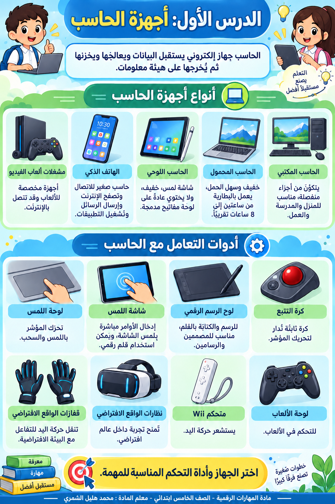
ما الحاسب؟ الحاسب جهاز إلكتروني يستطيع اتباع تعليمات محددة لاتخاذ القرارات والقيام بالكثير من الأمور المفيدة.
أنواع أجهزة الحاسب:
- الحاسب المكتبي: يُستخدم في المكتب والمدرسة والمنزل، ويتكوّن من الشاشة ولوحة المفاتيح والفأرة ووحدة النظام ومكبرات الصوت.
- الحاسب المحمول: خفيف الوزن وسهل الحمل، يحتوي على بطارية داخلية، ويُعد النوت بوك أحد أنواعه الصغيرة.
- الحاسب اللوحي: غالبًا بلا لوحة مفاتيح، وإدخال البيانات فيه يكون باللمس.
- الهواتف الذكية: تُعد أجهزة حاسب مصغّرة، تُستخدم للاتصال وتصفح الإنترنت والألعاب.
- مشغلات ألعاب الفيديو: أجهزة مخصصة للألعاب الفردية أو الجماعية عبر الإنترنت.
الواجب
فتح نموذج الواجبالإثراءات
محتوى تجريبي — ضع هنا نشاط إثرائي.
الدرس الثاني: أجزاء الحاسب
شرح الدرس
الدرس في صورة
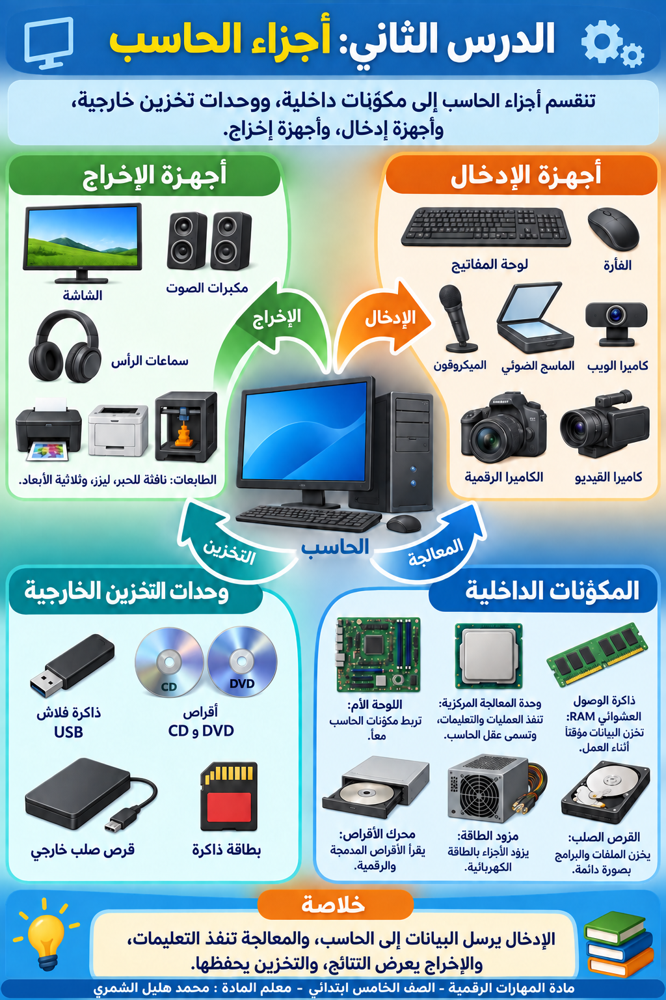
أجزاء الحاسب الرئيسة:
- اللوحة الأم: المركز الرئيس للحاسب، تتصل بها كل الأجزاء الأخرى وتجعلها تعمل معًا بنجاح.
- المعالج (وحدة المعالجة المركزية): يُعد "عقل" الحاسب، وينفذ جميع العمليات؛ وكلما كان أسرع عالج بيانات أكثر في وقت أقل.
- ذاكرة الوصول العشوائي (RAM): تخزّن البيانات التي يحتاجها المعالج لفترة قصيرة، وتؤثر سعتها في سرعة الحاسب.
- القرص الصلب: جهاز التخزين الرئيس للبرامج والملفات.
- مزود الطاقة: يزوّد مكونات الحاسب بالطاقة اللازمة للعمل.
- محرك الأقراص المضغوطة والرقمية: يتيح للحاسب قراءة الأقراص المختلفة والتفاعل معها.
أجهزة التخزين الخارجية: الذاكرة الفلاشية (صغيرة ورخيصة وسهلة النقل)، الأقراص المضغوطة وأقراص الفيديو الرقمية، القرص الصلب الخارجي (سعة تخزينية كبيرة جدًا)، وبطاقة الذاكرة (تُستخدم في الهواتف والكاميرات).
الواجب
فتح نموذج الواجبالإثراءات
محتوى تجريبي — ضع هنا نشاط إثرائي.
الدرس الثالث: الملفات والمجلدات
شرح الدرس
الدرس في صورة
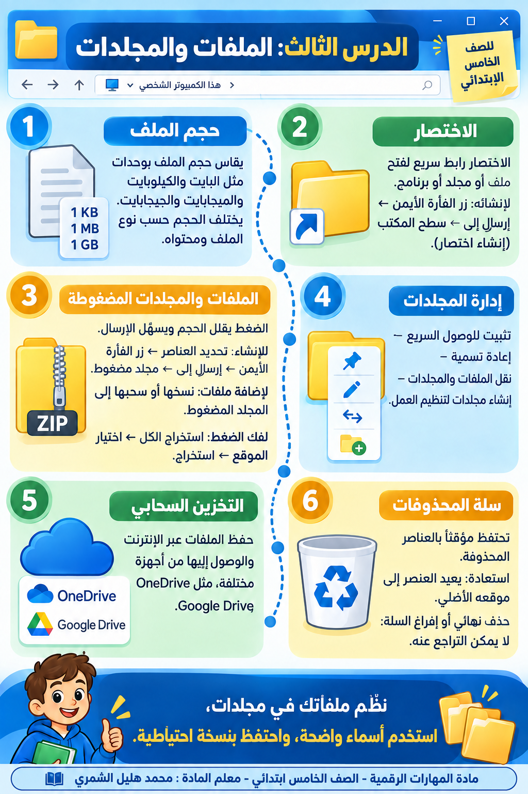
حجم الملف يُقاس بوحدات مثل الكيلوبايت والميجابايت، تمامًا كما يُقاس وزن الأشياء.
مهارات هذا الدرس:
- معرفة حجم ملف: بالإشارة إلى الملف بالفأرة، ثم التحقق من حجمه في مربع النص الذي يظهر.
- إنشاء اختصار لملف أو برنامج: بالضغط بزر الفأرة الأيمن عليه واختيار "إنشاء اختصار"، أو اختيار "إرسال إلى ← سطح المكتب" لإنشاء اختصار مباشر عليه.
- حذف اختصار: بالضغط بزر الفأرة الأيمن على الاختصار ثم اختيار "حذف".
- ضغط ملف أو مجلد: بالضغط بزر الفأرة الأيمن عليه، ثم "إرسال إلى ← مجلد مضغوط".
- إعادة تسمية مجلد مضغوط: بالضغط بزر الفأرة الأيمن عليه واختيار "إعادة تسمية".
- فك الضغط: بفتح المجلد المضغوط ضغطًا مزدوجًا لاستخراج ملف واحد، أو باختيار "استخراج الكل" من قائمة الزر الأيمن لاستخراج جميع الملفات.
- تغيير طريقة عرض محتويات المجلد وعرض تفاصيل أكثر عن الملفات: من علامة التبويب "عرض" في مستكشف الملفات.
- سلة المحذوفات: يمكن استعادة ملف محذوف منها، أو إفراغها بالكامل لحذف كل عناصرها نهائيًا.
الواجب
فتح نموذج الواجبالإثراءات
أنشئ مجلدًا على سطح مكتبك، ضع فيه بعض الملفات، ثم جرّب ضغطه إلى مجلد مضغوط وفك ضغطه مرة أخرى.
تقويم الوحدة
هذا التقويم يُعتبر تقويمًا رسميًا للوحدة بأكملها، وينبغي الاهتمام بالإجابة عليه بعناية والاستذكار الجيد لجميع دروس الوحدة قبل حله.
الوحدة الثانية: التعامل مع المستندات
الدرس الأول: الصور والرسومات
شرح الدرس
الدرس في صورة
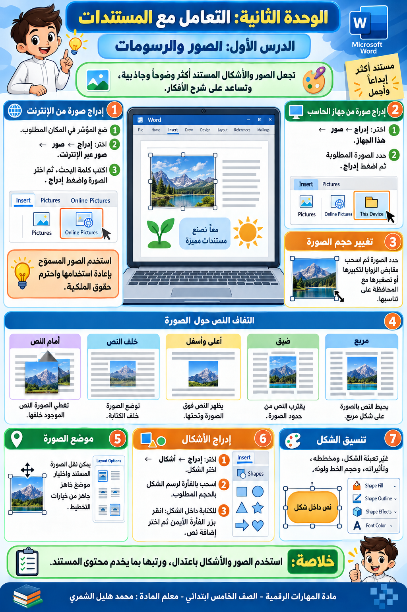
إضافة الصور والرسومات والأشكال إلى مستنداتك تجعلها أكثر جاذبية ووضوحًا، وتساعد القارئ على فهم أفكارك بشكل أفضل.
الحصة الأولى (ص 62-63): إدراج الصور
١) إدراج صورة من الإنترنت:
- من تبويب "إدراج"، اختر "صور" ثم "صور عبر الإنترنت".
- ابحث عن الصورة المناسبة باستخدام محركات البحث المتاحة في الأداة.
- اختر الصورة واضغط "إدراج".
تنبيه: الصور عبر الإنترنت محمية بحقوق الطبع والنشر، ولا يجوز نسخها أو تعديلها أو توزيعها ما لم تحصل على إذن صريح حسب اتفاقية ترخيص المستخدم وشروط الترخيص المرفقة بالصورة.
٢) إدراج صورة من جهاز الحاسب:
- حدّد موضع إدراج الصورة في المستند أولًا.
- من تبويب "إدراج" اختر "صور" ثم "هذا الجهاز".
- من نافذة "إدراج صورة" حدّد الصورة التي تريد إضافتها.
الحصة الثانية (ص 63-65): تعديل الصور وإدراج الأشكال
- تعديل الصورة: اضغط على الصورة، ثم افتح تبويب "تنسيق الصورة" الذي يظهر تلقائيًا.
- الاقتصاص: لقص جزء محدد من الصورة، استخدم أدوات مجموعة "الحجم".
- الحدود والتأثيرات: لإضافة حدود أو تأثيرات كالتوهج والظل، استخدم أدوات مجموعة "أنماط الصور".
- إدراج الأشكال: من تبويب "إدراج" اختر "أشكال"، ثم ارسم الشكل داخل المستند — ويمكنك الكتابة داخله مباشرة.
الواجب
اختر الإجابة الصحيحة لكل سؤال:
- لإضافة صورة إلى مقالك في مايكروسوفت وورد، عليك الضغط على علامة تبويب: (الشريط الرئيسي / تصميم / إدراج)
- تتيح لك أداة "صور عبر الإنترنت" البحث عن الصور من الإنترنت، باستخدام: (ملفات حاسبك / محركات البحث / مشغلات الفيديو)
- عند إدراج صور من الإنترنت، لا يجوز نسخها أو تعديلها أو توزيعها ما لم تحصل على إذن صريح في: (اتفاقية ترخيص المستخدم / شروط الترخيص المصاحبة للصور / جميع ما ذكر)
- لتعديل صورة أدرجتها حتى تكون متناسقة مع النص، اضغط عليها ثم على علامة تبويب: (الشريط الرئيسي / تخطيط / تنسيق الصورة)
- يمكنك اقتصاص جزء محدد من الصورة، باستخدام أدوات مجموعة: (الحجم / ترتيب / أنماط الصور)
- يمكنك إضافة شكل إلى مقالك، من خلال علامة تبويب: (تخطيط / تصميم / إدراج)
الإثراءات
اكتب فقرة قصيرة عن حيوانك المفضل في مستند وورد، ثم أدرج له صورة مناسبة (من جهازك أو من الإنترنت مع مراعاة حقوق الاستخدام)، وأضف شكلًا يحتوي على عنوان جذّاب لموضوعك، وجرّب تنسيق الصورة بإضافة حدود أو تأثير ظل لها.
الدرس الثاني: التنسيق المتقدم
شرح الدرس
الدرس في صورة
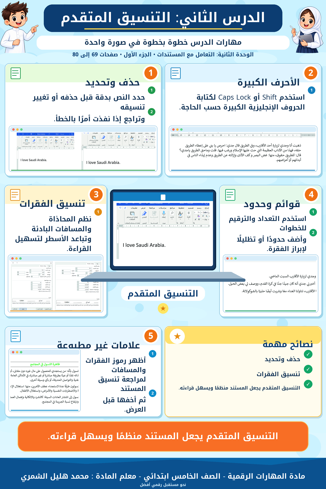
الحصة الأولى (ص 69-72): حذف النص والحروف الكبيرة وتنسيق الفقرات
- حذف النص المحدد: بعد تحديد كلمة أو جملة، احذفها بمفتاح Delete أو Backspace أو مفتاح المسافة.
- الحروف الكبيرة بالإنجليزية: استخدم Shift أو Caps Lock لكتابة الحروف الكبيرة حسب الحاجة.
- المسافة البادئة للفقرة: من تبويب الشريط الرئيسي ← مجموعة فقرة ← زيادة المسافة البادئة.
- المسافة بين الأسطر: من نفس مجموعة فقرة، زر تباعد الأسطر والفقرات.
الحصة الثانية (ص 73-75): نصائح التنسيق والأحرف غير القابلة للطباعة
- عند كتابة فقرة، أكمل الكتابة حتى نهايتها بدون الضغط على Enter بعد كل سطر — البرنامج ينقل المؤشر تلقائيًا.
- اضغط Enter فقط عند إنشاء فقرة جديدة أو عنصر جديد في قائمة.
- لمتابعة الكتابة بسطر جديد دون مسافة فقرة إضافية، اضغط Shift + Enter.
- إظهار/إخفاء الأحرف غير القابلة للطباعة: (مثل الفراغات وعلامات الجدولة) تساعد في تعديل النص بدقة، وتظهر من مجموعة فقرة.
الواجب
اختر الإجابة الصحيحة لكل سؤال:
- يمكنك حذف النص الذي قمت بتحديده، بالضغط على مفتاح: (Shift / Caps Lock / Backspace)
- مفتاح يمكن استخدامه لكتابة الأحرف الكبيرة باللغة الإنجليزية: (Shift / Caps Lock / Alt)
- لتطبيق المسافة البادئة للفقرة، اضغط على زيادة المسافة البادئة، من مجموعة: (فقرة / خط / أنماط)
- وجود مساحة إضافية بين السطور، تدل على أنك ضغطت في نهاية كل سطر على مفتاح: (Caps Lock / Enter / Spacebar)
الإثراءات
فكّر: ما فائدة تباعد الفقرات بين الأسطر؟ وما النصائح التي تقدمها لزملائك عند تنسيق الفقرات غير ما ذُكر في الدرس؟
الدرس الثالث: إدراج الرسومات التوضيحية
شرح الدرس
الدرس في صورة
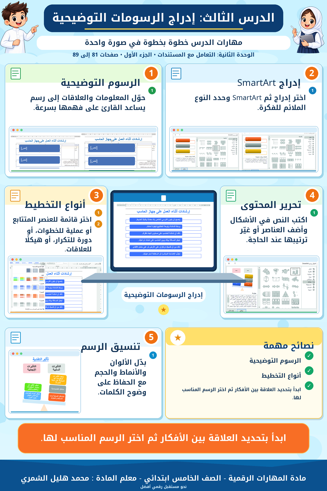
الحصة الأولى (ص 81-83): إدراج وتنسيق الرسوم التوضيحية
- إدراج رسم توضيحي SmartArt: من تبويب "إدراج" ← "رسومات توضيحية"، ثم اختيار النوع الملائم للفكرة.
- تنسيق الرسم التوضيحي: بعد تحديده، يمكن تغيير لونه وشكله من تبويب "تصميم".
الحصة الثانية (ص 84-86): أنواع الرسوم التوضيحية SmartArt
- قائمة: لعرض معلومات غير مترابطة.
- عملية / معالجة: لإظهار خطوات أو عناصر متسلسلة أو غير متسلسلة.
- دورة: لإظهار عملية مستمرة.
- هيكلي: لإظهار معلومات متسلسلة بشكل هرمي.
- علاقة: للمقارنة بين فكرتين.
- هرمي: لإظهار العلاقات النسبية أو المتداخلة (مثل الهرم الغذائي).
- مصفوفة: لإظهار علاقة الأجزاء بالكل.
الواجب
اختر الإجابة الصحيحة لكل سؤال:
- أشكال يمكن إضافتها إلى مستندك في مايكروسوفت وورد لعرض المعلومات بشكل أوضح داخل المستند: (المسافة البادئة / الأحرف غير القابلة للطباعة / الرسوم التوضيحية)
- يتم إضافة رسوم توضيحية إلى مستندك، من علامة تبويب: (الشريط الرئيسي / إدراج / رسم)
- يمكنك تنسيق الرسم التوضيحي، بتغيير: (اللون / الشكل / جميع ما ذكر)
- إحدى أنواع الرسوم التوضيحية، ويُستخدم لإظهار العلاقات النسبية أو المتداخلة (مثال: هرم غذائي): (هيكلي / هرمي / مصفوفة)
الإثراءات
فكّر: كيف نستفيد من الرسوم التوضيحية داخل حجرة الصف؟ وما أكثر أنواع الرسوم التوضيحية استخدامًا من وجهة نظرك؟
الدرس الرابع: التدقيق والطباعة
شرح الدرس
الدرس في صورة
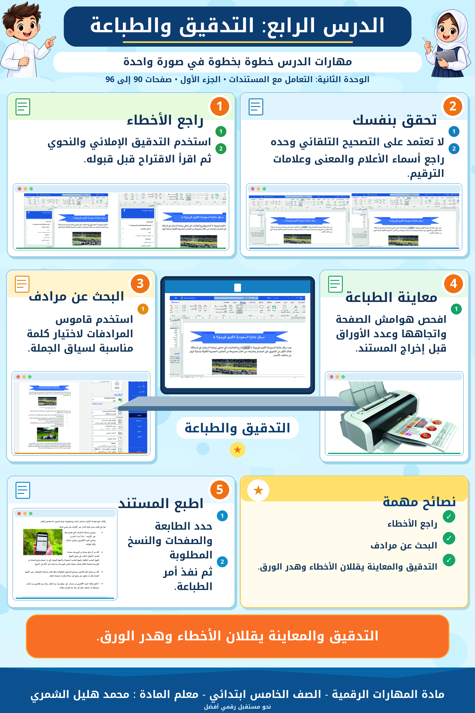
(ص 90-93): التدقيق والتحقق من الأخطاء، البحث عن المرادفات، والطباعة
- التدقيق والتحقق من الأخطاء: من تبويب "مراجعة"، لا تعتمد على التصحيح التلقائي وحده — راجع أسماء الأعلام والمعنى وعلامات الترقيم دائمًا.
- البحث عن المرادفات: حدد الكلمة واضغط Shift + F7 لفتح قاموس المرادفات واختيار كلمة مناسبة لسياق الجملة.
- الطباعة: من تبويب "ملف" ← "طباعة"، حدد الطابعة والصفحات والنسخ المطلوبة، وافحص هوامش الصفحة واتجاهها وعدد الأوراق قبل الطباعة الفعلية.
الواجب
اختر الإجابة الصحيحة لكل سؤال:
- يتم التدقيق والتحقق من الأخطاء في مايكروسوفت وورد، من علامة تبويب: (مراجعة / مراجع / تعليمات)
- يمكنك البحث عن مرادفات كلمة عن طريق قاموس المرادفات، بالضغط على مفتاحي: (Shift + F / Shift + 7 / Shift + F7)
- لطباعة مستند في مايكروسوفت وورد، يتم الضغط على طباعة، من علامة تبويب: (ملف / إدراج / الشريط الرئيسي)
- لطباعة الصفحة رقم 1 والصفحة رقم 5 (صفحتين فقط)، نكتب في نافذة إعدادات الطباعة: (5&1 / 5-1 / 1,5)
الإثراءات
فكّر: في حال عدم وجود طابعة لديك، ما الطريقة الأفضل لحفظ المستند أو مشاركته دون التأثير على تنسيقه؟
تقويم الوحدة
هذا التقويم يُعتبر تقويمًا رسميًا للوحدة بأكملها، وينبغي الاهتمام بالإجابة عليه بعناية والاستذكار الجيد لجميع دروس الوحدة قبل حله.
الوحدة الثالثة: الوسائط المتعددة
الدرس الأول: استخدام أجهزة الالتقاط وتحرير مقاطع الصوت
شرح الدرس
الدرس التفاعلي: شرح مطابق للكتاب، و«الدرس في صورة»، وتدريبات عملية بتصحيح فوري.
الواجب
أجب عن أسئلة الواجب بعد مشاهدة الشرح وتجربة مختبر أوداسيتي، وتأكد من كتابة اسمك الثلاثي بشكل صحيح.
فتح نموذج الواجبالإثراءات
تطبيقات على الأجهزة الذكية: ويف باد (WavePad) لتسجيل الصوت وتحريره على iOS، وأندروفيد (AndroVid) لتحرير الفيديو وتحويله إلى صوت على أندرويد. نشاط منزلي: افتح خصائص ثلاثة ملفات مختلفة في حاسب المنزل، واكتب امتداد كل ملف وحجمه، ثم رتّبها من الأصغر إلى الأكبر.
الدرس الثاني: البحث عن الوسائط المتعددة وإنشاء وتحرير مقاطع الفيديو
شرح الدرس
الدرس التفاعلي: «شرح الدرس في صورة»، وشرح مطابق للكتاب، ومحاكاة للبحث عن الصور برخصة المشاع الإبداعي، ومحاكاة لمحرر الفيديو لإنشاء قصة متحركة، وتدريبات بتصحيح فوري.
الواجب
أجب عن أسئلة الواجب بعد مشاهدة الشرح وتجربة الاستوديو التفاعلي، وتأكد من كتابة اسمك الثلاثي بشكل صحيح.
فتح نموذج الواجبالإثراءات
أنشئ مع أسرتك فيلمًا قصيرًا من صور رحلة عائلية أو من صور تراث منطقة حائل، وأضف عنوانًا وصوتًا مناسبًا، واذكر في نهايته مصادر الصور. ولا تنشر صور أحد دون إذنه.
المسار التدريبي
هذا مسارك الشخصي في مادة المهارات الرقمية — ابدأ بالدرس الأول، وبعد ما تنهيه يفتح لك الدرس التالي تلقائيًا. اكتب اسمك أول مرة ليتذكرك الموقع، ويقدر المعلم يتابع تقدمك.
إنجاز الدرس هنا يعتمد على أمانتك — اقرأ الدرس وحل واجبه قبل ما تضغط "أنهيت الدرس". يصل تقدمك مباشرة لمعلمك.
أضف مشروعك
مشاريعك التطبيقية جزء مهم من تعلّمك — فهي التي تحوّل ما تتعلمه إلى شيء حقيقي تصنعه بنفسك. يسعدني جدًا رؤية إنجازاتكم، وسيتم عرض أفضل المشاريع على هذا الموقع ليستفيد ويستمتع بها زملاؤكم.
كل مشروع يُرفع ويُقبل يستحق مكافأة قدرها 10 ريالات 🎉
الصف السادس الابتدائي
كتاب الطالب (المقرر الدراسي)
توزيع المقرر
الوحدة الأولى: التصميم ثلاثي الأبعاد
| الأسبوع | التاريخ | الحصة الأولى | الحصة الثانية |
|---|---|---|---|
| الأول | 1448/03/10 هـ 2026/08/23 م | الدرس الأول: مقدمة إلى النمذجة ثلاثية الأبعاد | الدرس الأول: مقدمة إلى النمذجة ثلاثية الأبعاد |
| الثاني | 1448/03/17 هـ 2026/08/30 م | الدرس الأول: مقدمة إلى النمذجة ثلاثية الأبعاد + طرح فكرة المشروع | الدرس الثاني: معالجة الأشكال ثلاثية الأبعاد |
| الثالث | 1448/03/24 هـ 2026/09/06 م | الدرس الثاني: معالجة الأشكال ثلاثية الأبعاد | الدرس الثاني: معالجة الأشكال ثلاثية الأبعاد |
| الرابع | 1448/04/02 هـ 2026/09/13 م | مناقشة مشروع الوحدة الأولى | تقويم الوحدة الأولى + جدول المهارات |
الوحدة الثانية: جداول البيانات
| الأسبوع | التاريخ | الحصة الأولى | الحصة الثانية |
|---|---|---|---|
| إجازة الأربعاء والخميس | |||
| الخامس | 1448/04/09 هـ 2026/09/20 م | الدرس الأول: تنفيذ العمليات الحسابية | الدرس الأول: تنفيذ العمليات الحسابية |
| السادس | 1448/04/16 هـ 2026/09/27 م | الدرس الأول: تنفيذ العمليات الحسابية | الدرس الثاني: المخططات البيانية + طرح فكرة المشروع |
| السابع | 1448/04/23 هـ 2026/10/04 م | الدرس الثاني: المخططات البيانية | الدرس الثاني: المخططات البيانية |
| الثامن | 1448/04/30 هـ 2026/10/11 م | مناقشة مشروع الوحدة الثانية | تقويم الوحدة الثانية + جدول المهارات |
الوحدة الثالثة: قواعد البيانات
| الأسبوع | التاريخ | الحصة الأولى | الحصة الثانية |
|---|---|---|---|
| التاسع | 1448/05/07 هـ 2026/10/18 م | الدرس الأول: مقدمة عن قواعد البيانات | الدرس الأول: مقدمة عن قواعد البيانات + طرح فكرة المشروع |
| العاشر | 1448/05/14 هـ 2026/10/25 م | الدرس الثاني: إنشاء قاعدة البيانات | الدرس الثاني: إنشاء قاعدة البيانات |
| الحادي عشر | 1448/05/21 هـ 2026/11/01 م | الدرس الثالث: الفرز والتصفية + مناقشة مشروع الوحدة الثالثة | تقويم الوحدة الثالثة |
الوحدة الرابعة: البرمجة باستخدام سكراتش
| الأسبوع | التاريخ | الحصة الأولى | الحصة الثانية |
|---|---|---|---|
| الثاني عشر | 1448/05/28 هـ 2026/11/08 م | الدرس الأول: التكرار في سكراتش + طرح فكرة المشروع | الدرس الأول: التكرار في سكراتش |
| الثالث عشر | 1448/06/05 هـ 2026/11/15 م | الدرس الثاني: برمجة العمليات الحسابية | الدرس الثاني: برمجة العمليات الحسابية |
| إجازة الخريف: من 1448/06/09 هـ حتى 1448/06/18 هـ (من 2026/11/20 م حتى 2026/11/28 م) | |||
| الرابع عشر | 1448/06/19 هـ 2026/11/29 م | الدرس الثالث: اتخاذ القرارات | الدرس الثالث: اتخاذ القرارات |
| الخامس عشر | 1448/06/26 هـ 2026/12/06 م | الدرس الرابع: الإحداثيات في سكراتش | الدرس الرابع: الإحداثيات في سكراتش |
| السادس عشر | 1448/07/04 هـ 2026/12/13 م | الدرس الخامس: القرارات المركبة في سكراتش | الدرس الخامس: القرارات المركبة في سكراتش |
| السابع عشر | 1448/07/11 هـ 2026/12/20 م | الدرس السادس: الألعاب في سكراتش | الدرس السادس: الألعاب في سكراتش |
| الثامن عشر | 1448/07/18 هـ 2026/12/27 م | مناقشة مشروع الوحدة الرابعة | تقويم الوحدة الرابعة + جدول المهارات + اختبر نفسك |
| التاسع عشر | 1448/07/25 هـ 2027/01/03 م | الاختبارات النهائية النظرية | الاختبارات النهائية النظرية |
اتفاقية التعليم عن بعد
القواعد الصفية
الاختبار التشخيصي
الاختبار التشخيصي اختبار قصير يُجرى في بداية الفصل الدراسي لمعرفة مستوى الطالب المبدئي في مهارات المادة قبل بدء الدروس. لا يترتب عليه نجاح أو رسوب ولا يؤثر على درجات الطالب — هدفه الوحيد مساعدة المعلم على فهم نقاط القوة والضعف لدى الطلاب والتخطيط للدروس بما يناسبهم.
الوحدة الأولى: التصميم ثلاثي الأبعاد
الدرس الأول: مقدمة إلى النمذجة ثلاثية الأبعاد
شرح الدرس
الدرس في صورة
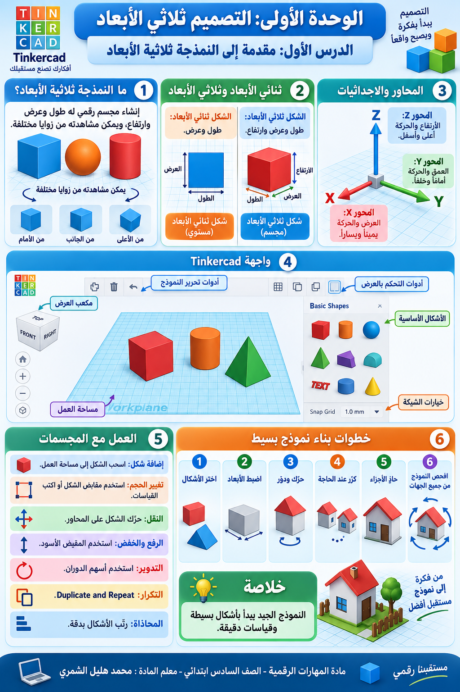
النمذجة ثنائية وثلاثية الأبعاد: الشكل ثنائي الأبعاد مُسطح وله بُعدان فقط (الطول والعرض)، مثل المربع والدائرة، ويمكن رسمه ببرنامج كالرسام. أما الشكل ثلاثي الأبعاد فله ثلاثة أبعاد (الطول والعرض والارتفاع)، مثل المكعب والكرة، ويمكننا "لمسه" من كل الجهات.
تطبيقات النمذجة ثلاثية الأبعاد: التصاميم المعمارية (ناطحات السحاب، الجسور، الملاعب)، تصميم المنتجات (السيارات، الأجهزة المنزلية والطبية)، وبيئات وتجارب الواقع الافتراضي.
برنامج Tinkercad: برنامج تصميم ثلاثي الأبعاد نتعلم فيه هذه الوحدة. من أهم أجزاء واجهته: الموارد (دروس ووثائق تعليمية)، الفصول الدراسية (للتعاون بين المعلم والطلبة)، المشروعات، المعرض (تصاميم مجتمع المستخدمين)، وقائمة "تينكر" لبدء تصميم جديد.
مساحة العمل: تحتوي على أدوات تحرير النموذج (مثل التجميع وفك التجميع والمحاذاة والمرآة)، وأدوات التحرير (النسخ واللصق والمضاعفة والحذف والتراجع)، إضافة إلى أدوات الأشكال الأساسية كالصندوق والأسطوانة والسقف.
الواجب
اختر الإجابة الصحيحة لكل سؤال:
- مصطلح يعبر عن إنشاء تمثيل ثنائي الأبعاد لشكل أو مشهد: (النمذجة ثنائية الأبعاد / النمذجة ثلاثية الأبعاد / لا شيء مما ذكر)
- تُعد المكعبات والأهرامات والأقماع من الأمثلة الشائعة على: (الأشكال المسطحة / الأشكال ثنائية الأبعاد / الأشكال ثلاثية الأبعاد)
- مكان في برنامج تينكركاد يمكنك العثور فيه على البرامج التعليمية والوثائق: (الموارد / المعرض / المشروعات)
- سطح مستوٍ يمكنك إنشاء الأشكال داخله في تينكركاد: (المعرض / مساحة العمل / الفصول الدراسية)
الإثراءات
أنشئ حسابًا لك في برنامج Tinkercad (بمساعدة أحد والديك)، ثم تجوّل في قسم "المعرض" وشاهد تصاميم مستخدمين آخرين للتعرف على ما يمكن إنشاؤه بالنمذجة ثلاثية الأبعاد.
الدرس الثاني: معالجة الأشكال ثلاثية الأبعاد
شرح الدرس
الدرس في صورة
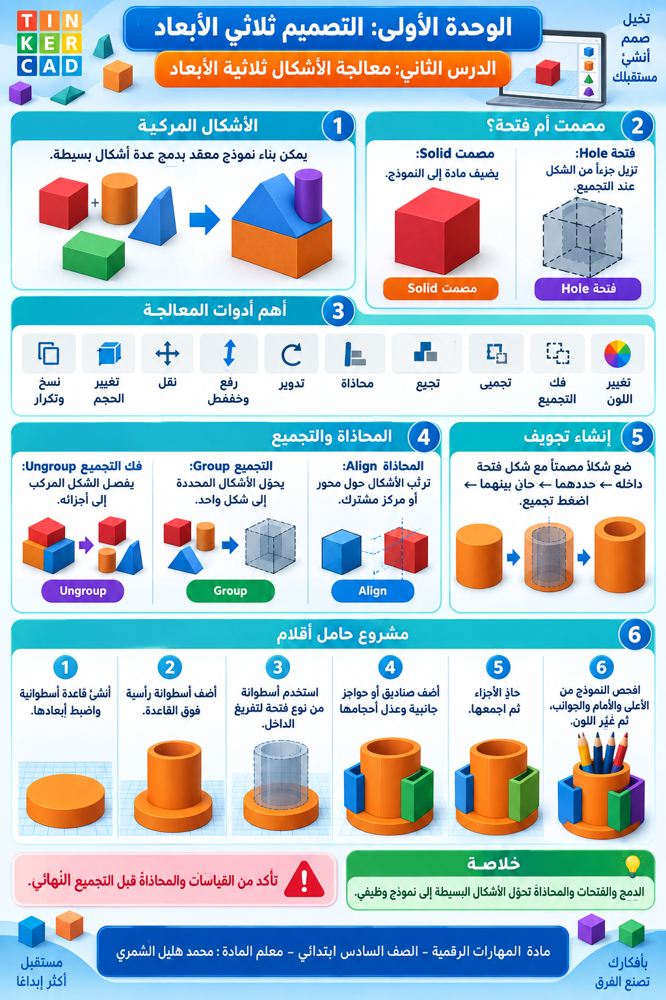
الأشكال الصلبة والمفرغة: عند إعداد شكل في تينكركاد يمكن ضبطه إلى "صلب" فيكون شكلًا ثلاثي الأبعاد مصمتًا تمامًا، أو ضبطه إلى "مفرغ" فينشئ فراغًا أو ثقبًا داخل أي جسم صلب يتقاطع معه — وهذه هي الطريقة التي نصنع بها التجاويف والفتحات في التصاميم.
أدوات تحرير النموذج المهمة: المحاذاة لترتيب شكلين أو أكثر بدقة مع بعضها، والتجميع لدمج عدة أشكال لتُعامل كشكل واحد، والمرآة لإنشاء صورة معكوسة للشكل. ومن أدوات التحرير: النسخ واللصق، والمضاعفة والتكرار لإنشاء نسخ متعددة من شكل بنمط معيّن.
تصميم حامل المستلزمات المكتبية: مثال عملي يجمع بين أسطوانتين (قاعدة وحامل أقلام مفرّغ من الداخل) وصندوق وسقف، باستخدام الأسطوانة والصندوق مع تغيير الطول والعرض والارتفاع، ثم تحويل أحد الأشكال إلى "مفرغ" لصنع فجوة حامل الأقلام.
أداة فيوكيوب (ViewCube): تتيح تغيير طريقة عرض التصميم ثلاثي الأبعاد (كالعرض من أعلى)، ويمكن التنقل في مساحة العمل باستخدام أزرار الفأرة وعجلة التمرير.
تغيير الألوان: يمكن تحديد الأشكال ثم اختيار لون جديد لها من لوحة الخصائص، لتخصيص شكل التصميم النهائي.
الواجب
اختر الإجابة الصحيحة لكل سؤال:
- خيار يجعل الشكل ثلاثي الأبعاد مصمتًا تمامًا بلا فراغات: (صلب / مفرغ / سقف)
- خيار ينشئ فجوة في أي جسم صلب يتقاطع معه: (سقف / صلب / مفرغ)
- مصطلح يعبر عن ترتيب شكلين أو أكثر ووضعهما بطريقة معينة: (محاذاة الأشكال / مضاعفة الأشكال / تفريغ الأشكال)
- أداة تتيح تدوير عرض الكاميرا والتنقل في مساحة العمل: (المرآة / فيوكيوب / التجميع)
الإثراءات
باستخدام Tinkercad، صمم شكلًا بسيطًا (مثل قلم رصاص أو صندوق هدية) يجمع بين شكلين على الأقل، وجرّب تحويل أحد الأجزاء إلى "مفرغ" لصنع فتحة داخله، ثم غيّر لون التصميم النهائي.
تقويم الوحدة
هذا التقويم يُعتبر تقويمًا رسميًا للوحدة بأكملها، وينبغي الاهتمام بالإجابة عليه بعناية والاستذكار الجيد لجميع دروس الوحدة قبل حله.
الوحدة الثانية: جداول البيانات
الدرس الأول: تنفيذ العمليات الحسابية
شرح الدرس
ماذا سنتعلم؟
- العمليات الحسابية ورموزها في برنامج إكسل.
- أولوية تنفيذ العمليات الحسابية.
- كتابة المعادلات واستخدام الأقواس والأسس.
- التعبئة التلقائية وحساب النسب المئوية.
🖼️ الدرس في صورة
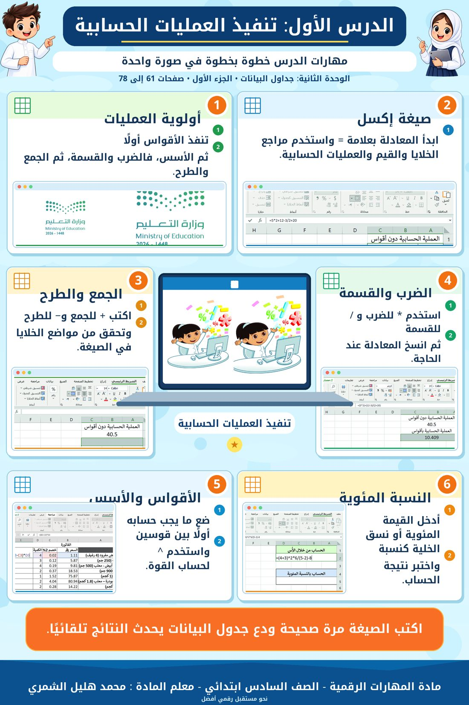
🎬 فيديو شرح الدرس
1) رموز العمليات الحسابية في إكسل
💡 كل صيغة في إكسل تبدأ بعلامة =، وبعد كتابتها نضغط Ctrl + Enter ليظهر الناتج في الخلية نفسها.
2) أولوية تنفيذ العمليات (ص 61)
3) تنفيذ معادلة دون أقواس (ص 63)
- من تبويب تخطيط الصفحة ← مجموعة خيارات الورقة اضغط ورقة من اليمين لليسار.
- حدد الخلايا من
A1إلىC1، ثم من الشريط الرئيسي ← محاذاة اضغط دمج وتوسيط. - اكتب في A1: «العملية الحسابية دون أقواس» واضغط Ctrl + Enter.
- ادمج الخلايا من
A2إلىC2واكتب:=5*2+12-3/2+20ثم Ctrl + Enter. - الناتج الصحيح: 40.5
4) استخدام الأقواس (ص 64–66)
- ادمج الخلايا
A3:C3واكتب «العملية الحسابية بأقواس». - ادمج الخلايا
A4:C4واكتب:=(5*2)+(12-3)/(2+20)ثم Ctrl + Enter. - الناتج: 10.409 (مقرَّبًا لثلاث منازل عشرية).
- نسّق الخلايا بتطبيق الحدود والتظليل.
🔎 لاحظ: الأرقام نفسها أعطت ناتجًا مختلفًا (40.5 ثم 10.409) لأن الأقواس غيّرت ترتيب التنفيذ.
5) الفاتورة والتعبئة التلقائية (ص 68)
- اضغط على الخلية
E3. - اكتب
=(B3-C3)*D3أي (السعر − الخصم) × الكمية، ثم Ctrl + Enter. - اسحب مقبض التعبئة (+) من E3 حتى E9 لنسخ الصيغة.
- سيُحسب السعر الإجمالي لكل منتج تلقائيًا.
6) الأسس (ص 70–71)
الصيغة: =(4+3)^2*6/(5-2)-8
7) النسبة المئوية (ص 72)
- اضغط على الخلية المدمجة
A5. - اكتب
=10*25%ثم Ctrl + Enter، والناتج 2.5. - من الشريط الرئيسي ← مجموعة رقم اضغط نمط النسبة المئوية % لتنسيق القيمة كنسبة.
🧪 جرّب بنفسك: مختبر الصيغ
اكتب صيغة كما تكتبها في إكسل (يمكنك استخدام + - * / ^ % والأقواس):
✨ اكتب الصيغة مرة صحيحة ودع جدول البيانات يحدّث النتائج تلقائيًا.
الواجب
اختر الإجابة الصحيحة لكل سؤال، ثم حلّ نموذج الواجب:
- يشير الرمز "^" إلى العملية الحسابية: (رفع الرقم إلى الأس / القسمة / الجمع)
- يمكنك دمج وتوسيط الخلايا من علامة تبويب الشريط الرئيسي، من مجموعة: (محاذاة / أنماط / خلايا)
- بعد كتابة العملية الحسابية في الخلية، يُعرض الناتج في الخلية نفسها بالضغط على: (Ctrl + Enter / Shift + Alt / Ctrl + Tab)
- الصيغة الصحيحة لحساب السعر الإجمالي هي: ((سعر المنتج – الخصم) * الكمية / (سعر المنتج – الكمية) * الخصم / (سعر المنتج * الخصم) * الكمية)
- يُستخدم مقبض التعبئة للتعبئة التلقائية، ويُشار له بالرمز: (+ / @ / #)
الإثراءات
📖 قصة: سامي والرحلة داخل جدول إكسل السحري
سقط سامي داخل شاشة الحاسب، وقال له الروبوت «روبو»: لن تخرج حتى تتقن العمليات الحسابية! فتعلّم أن الأقواس أولًا، ثم الأسس، ثم الضرب والقسمة، وأخيرًا الجمع والطرح، حتى أتمّ المهمة وعاد خبيرًا في إكسل.
🎞️ مقاطع إثرائية قصيرة
💬 همسات
✅ تدرّب: اختر الإجابة الصحيحة
1. في برنامج إكسل، رمز عملية الضرب هو:
2. أي العمليات التالية تُنفَّذ أولًا؟
3. يشير الرمز ^ إلى:
4. لإجراء العملية وعرض الناتج في الخلية نفسها نضغط:
5. أمر دمج وتوسيط موجود في الشريط الرئيسي ضمن مجموعة:
6. ناتج الصيغة =5*2+12-3/2+20 هو:
7. الصيغة التي ناتجها 10 هي:
8. مقبض التعبئة التلقائية يظهر بالرمز:
9. يُشار إلى مكان الخلية بـ:
10. نمط النسبة المئوية % موجود في الشريط الرئيسي ضمن مجموعة:
الدرس الثاني: المخططات البيانية
شرح الدرس
ماذا سنتعلم؟
- مفهوم المخططات البيانية وأنواعها.
- إدراج مخطط عمودي ومخطط دائري مجوف.
- إضافة تسميات البيانات وتغيير اتجاه الصفحة.
- ضبط الهوامش وطباعة جدول البيانات.
🖼️ الدرس في صورة
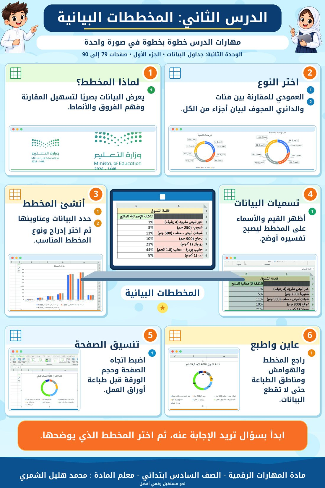
🎬 فيديو شرح الدرس
1) ما المخططات البيانية؟ (ص 79)
تمثيلات رسومية للبيانات تساعد على تحليل المعلومات المعقدة وتسهيل فهمها ومقارنتها.
2) أنواع المخططات البيانية (ص 79–81)
🎯 القاعدة الذهبية: ابدأ بسؤال تريد الإجابة عنه، ثم اختر المخطط الذي يوضّحه. مقارنة فئات ← عمودي، أجزاء من كل ← دائري/دائري مجوف، تغيّر عبر الزمن ← خطي.
3) إدراج مخطط عمودي (ص 82)
- حدد البيانات مع عناوينها، مثلًا من
A1إلىD9. - من تبويب إدراج ← مجموعة المخططات اضغط مخطط عمودي أو شريطي.
- من فئة عمود ثنائي الأبعاد اختر عمود متفاوت المسافات.
4) إدراج مخطط دائري مجوف (ص 84)
- حدد البيانات، مثلًا من
A1إلىB9(قائمة التسوق). - من تبويب إدراج ← المخططات اضغط مخطط دائري أو دائري مجوف.
- من فئة دائري مجوف اختر دائري مجوف، وسيظهر مخططك.
5) تسميات البيانات (ص 85)
- اضغط على المخطط لتحديده.
- من تبويب تصميم المخطط ← مجموعة تخطيطات المخطط اضغط إضافة عنصر المخطط.
- اضغط تسميات البيانات ثم إظهار؛ فتظهر القيم على المخطط ويصبح تفسيره أوضح.
6) اتجاه الصفحة (ص 86)
- من تبويب تخطيط الصفحة ← مجموعة إعدادات الصفحة اضغط الاتجاه.
- اختر عمودي أو أفقي حسب شكل جدولك ومخططك.
7) الهوامش والطباعة (ص 87–88)
- من تخطيط الصفحة ← إعدادات الصفحة اضغط الهوامش ثم هوامش مخصصة.
- اضبط الهوامش (أعلى، أيمن، أيسر، أسفل) على 2 سم.
- من «توسيط في الصفحة» اختر أفقيًا وعموديًا ثم موافق.
- من قائمة ملف اضغط طباعة، وعاين الصفحة وتأكد من الإعدادات ثم اطبع.
🖨️ الهوامش هي المساحة البيضاء الفارغة حول المنطقة المطبوعة؛ ضبطها مع المعاينة يمنع اقتطاع البيانات.
🧪 جرّب بنفسك: أي مخطط يناسب سؤالي؟
الواجب
اختر الإجابة الصحيحة لكل سؤال، ثم حلّ نموذج الواجب:
- تمثيل تخطيطي للبيانات يستخدم أشرطة عمودية لإظهار المقارنات بين الفئات: (المخطط العمودي / المخطط الخطي / المخطط الدائري)
- مخطط دائري به فجوة في الوسط، ويُستخدم لتمثيل البيانات في شكل نسب مئوية: (الدائري المجوف / الدائري / العمودي)
- يتم إضافة المخطط العمودي من علامة تبويب: (إدراج / الشريط الرئيسي / بيانات)
- يتم إضافة تسميات البيانات من علامة تبويب: (تصميم المخطط / الشريط الرئيسي / إدراج)
- يتم التحقق من هوامش جدول البيانات واتجاهه من علامة تبويب: (تخطيط الصفحة / بيانات / مراجعة)
الإثراءات
📖 قصة: رحلة عبر المخططات البيانية
دخلت نورة وأخوها فهد برنامج «عالم البيانات»، والتقيا بـ«مِحوري» الذي علّمهما أن الأرقام تتحول إلى مخططات تسهّل الفهم؛ فتعرّفا على العمودي والدائري المجوف، وأضافا تسميات البيانات، ثم ضبطا اتجاه الصفحة والهوامش وطبعا جزءًا محددًا من البيانات.
🎞️ مقاطع إثرائية قصيرة
💬 همسات
✅ تدرّب: اختر الإجابة الصحيحة
1. التمثيلات الرسومية للبيانات التي تسهّل فهمها هي:
2. مخطط يستخدم أشرطة عمودية للمقارنة بين الفئات:
3. مخطط يمثل البيانات كشرائح من دائرة:
4. مخطط يعرض نقاطًا متصلة بخطوط ويُظهر التغير مع الوقت:
5. مخطط دائري به فجوة في الوسط:
6. نُدرج المخطط من علامة تبويب:
7. نضيف تسميات البيانات من علامة تبويب:
8. نغيّر اتجاه الصفحة من علامة تبويب:
9. المساحة البيضاء الفارغة حول المنطقة المطبوعة هي:
10. لطباعة جدول البيانات نضغط طباعة من قائمة:
تقويم الوحدة
هذا التقويم يُعتبر تقويمًا رسميًا للوحدة بأكملها، وينبغي الاهتمام بالإجابة عليه بعناية والاستذكار الجيد لجميع دروس الوحدة قبل حله.
الوحدة الثالثة: قواعد البيانات
الدرس الأول: مقدمة عن قواعد البيانات
شرح الدرس
الدرس التفاعلي: شرح مطابق للكتاب، و«الدرس في صورة»، وتدريبات عملية بتصحيح فوري.
الواجب
أجب عن أسئلة الواجب بعد مشاهدة الشرح وحل التدريبات ومختبر قاعدة البيانات، وتأكد من كتابة اسمك الثلاثي بشكل صحيح.
فتح نموذج الواجبالإثراءات
تستخدم قواعد البيانات يوميًا: جهات الاتصال في هاتفك، وسجلات الطلاب في المدرسة، وفهرس المكتبة، والمتجر الإلكتروني. فكّر وناقش: اختر قاعدة بيانات تستخدمها أسرتك، واكتب اسم الجدول، والحقول الموجودة في كل سجل، ونوع البيانات في كل حقل.
الدرس الثاني: إنشاء قاعدة بيانات
شرح الدرس
الدرس التفاعلي: «شرح الدرس في صورة»، وشرح مطابق للكتاب، ومختبر إكسل لإنشاء قاعدة بيانات خطوة بخطوة، وتدريبات بتصحيح فوري.
الواجب
أجب عن أسئلة الواجب بعد مشاهدة الشرح وتجربة مختبر إكسل، وتأكد من كتابة اسمك الثلاثي بشكل صحيح.
فتح نموذج الواجبالإثراءات
أنشئ مع أسرتك قاعدة بيانات صغيرة في إكسل لكتب مكتبة المنزل بالحقول: اسم الكتاب، المؤلف، عدد الصفحات، لون الغلاف. أضف خمسة سجلات على الأقل، ثم نسّقها كجدول. وجرّب الاختصار Ctrl + T للتنسيق كجدول مباشرة.
الدرس الثالث: الفرز والتصفية
شرح الدرس
الدرس التفاعلي بتصميم سهل القراءة: خط كبير، وجمل قصيرة، وزر 🔊 لسماع كل فقرة، ومختبر إكسل للفرز والتصفية، وتدريبات بالضغط دون كتابة.
الإثراءات
مشروع الوحدة «سباق قواعد البيانات»: مجموعة تجمع معلومات عن الحيوانات، وأخرى عن الخضار والفواكه، ثم تتسابق المجموعتان في إيجاد المعلومة بالتصفية. التفاصيل داخل تبويب «إثراء» في الدرس التفاعلي.
المسار التدريبي
هذا مسارك الشخصي في مادة المهارات الرقمية — ابدأ بالدرس الأول، وبعد ما تنهيه يفتح لك الدرس التالي تلقائيًا. اكتب اسمك أول مرة ليتذكرك الموقع، ويقدر المعلم يتابع تقدمك.
إنجاز الدرس هنا يعتمد على أمانتك — اقرأ الدرس وحل واجبه قبل ما تضغط "أنهيت الدرس". يصل تقدمك مباشرة لمعلمك.
أضف مشروعك
مشاريعك التطبيقية جزء مهم من تعلّمك — فهي التي تحوّل ما تتعلمه إلى شيء حقيقي تصنعه بنفسك. يسعدني جدًا رؤية إنجازاتكم، وسيتم عرض أفضل المشاريع على هذا الموقع ليستفيد ويستمتع بها زملاؤكم.
كل مشروع يُرفع ويُقبل يستحق مكافأة قدرها 10 ريالات 🎉
إدارة الفصول
هذا القسم خاص بمعلمي المدرسة المركزية. أدخل الرمز للمتابعة.
الرمز غير صحيح، حاول مرة أخرى.
تواصل معنا
لديك سؤال أو ملاحظة أو استفسار عن مادة المهارات الرقمية؟ عبّئ النموذج التالي وسنتواصل معك.